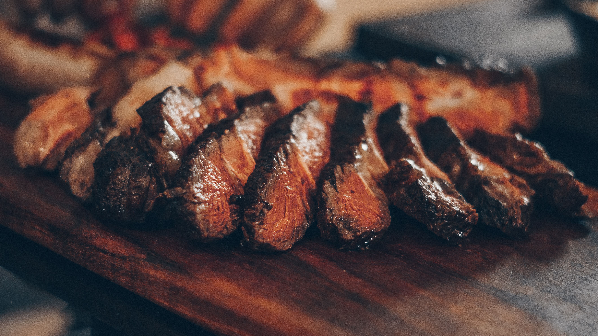

Contáctanos (81) 8182532934
Empezaremos mezclando nuestra sal ahumada con la pimienta recién molida para posteriormente aplicar una capa homogenea sobre nuestro corte para que al momento de asarla logremos esa capa que nos dará una costra de sabor, dejamos reposando mientras cortamos nuestra cabeza de ajo solo por la parte de arriba como si le quitáramos una tapa, en la parte destapada echámos un chorrito de nuestro aceite de oliva junto con una pizca de sal ahumada para darle sabor, envolvemos nuestro ajo en papel alumunio y lo ponemos en la parrilla a fuego directo por 20 a 25 min. Una vez teniendo esto listo y la brasa y la parrilla bien caliente procedemos a sellar nuestro prime rib por un tiempo aproximado de 3 a 4 minutos por todos los lados para después terminarlo con un fuego indirecto por un periodo de 40 a 50 minutos con un asador de tapa cerrado que nos permita terminar de cocer nuestra carne. Una vez que sale nuestro prime rib lo dejamos reposar por unos 15 min. en una charola tapada con algo de respiración para que no perdamos nuestra costra y nos permita conservar los jugos de la carne mismos que vamos a mezclar con nuestra pasta de ajo para crear el puré que queremos obtener. Un vez reposado nuestro primer rib y conservando sus jugos, abrimos el papel aluminio para expimir todo nuestro ajo sobre los jugos que conservamos de la carne lo mezclamos todo y ese puré lo esparcimos como una cama donde sea que vayamos a presentar nuestro platillo, puede ser una tabla, una plato, etc. Cortamos nuestro prime rib en pedazos para posteriormente degustarlo y obtener esa mezcla de sabores de la carne combinado con el puré de ajo y a disfrutar.
Empezamos sazonando nuestras piezas de salmón con nuestro Rub La Silla, que es una mezcla de orégano, sal, pimienta, cebolla y ajo. Después calentamos en un sartén las cucharadas de aceite y una vez caliente ponemos el salmón con la piel hacia abajo, lo dejamos hasta que se ponga rosa por todos lados, dando la vuelta con cuidado. Posteriormente sacamos y lo dejámos reposando al rededor de 10 minutos. En ese mismo aceite ponemos los ajos picados por un minuto y añadimos la leche evaporada, aqypi agregamos una pizca más de Rub La Silla y añadimos las espinacas bien lavadas, los tomates secos partidos en rajas o en cuadros y las hierbas aromáticas. Dejamos durante unos diez minuto y después agregams la cucharada de queso rallado y mezclamos todo, una vez terminado este proceso introducimos el salmón dentro y dejamos a fuego bajo durante unos cinco minutos más. Servimos inmediatamente cada trozo de salmón acompañado de la salsa ya disfrutar